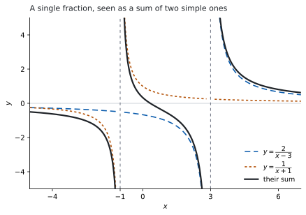

HL 1.11 — Partial fractions（部分分数分解）
- \(1\) つの分数を、\(\dfrac{A}{x-p} + \dfrac{B}{x-q}\) の形に分けられる。
- 分母を因数分解してから、\(A\) と \(B\) を決められる。
- \(A\) と \(B\) を、代入でも係数の比較でも出せる。
- どんな分数なら分けられるのか（シラバスの範囲）を、自分で判定できる。
- 分けた結果を、積分や二項展開につなげられる。
The idea
1. Undoing an addition of fractions（足し算を、逆向きにたどる）
\(2\) つの分数を、\(1\) つにまとめてみます。
\[ \frac{2}{x-3} + \frac{1}{x+1} = \frac{2(x+1) + (x-3)}{(x-3)(x+1)} = \frac{3x-1}{x^{2}-2x-3} \]
partial fractions（部分分数分解）は、この向きを逆にたどることです。\(\dfrac{3x-1}{x^{2}-2x-3}\) だけを見せられて、もとの \(2\) つを言い当てます。

図 1 が、その足し算の様子です。実線が \(\dfrac{3x-1}{x^{2}-2x-3}\)、\(2\) 本の点線が \(\dfrac{2}{x-3}\) と \(\dfrac{1}{x+1}\) です。
なぜ逆向きにたどりたいのでしょうか。 \(\dfrac{3x-1}{x^{2}-2x-3}\) のままでは手が出ない計算が、\(\dfrac{2}{x-3}\) と \(\dfrac{1}{x+1}\) に分かれた瞬間にできるようになるからです（第 7 節）。
公式集に、部分分数分解の式は印刷されていません。ただし覚える式もありません。 やることは、分母を因数分解して、分子を決めるだけです（第 3 節）。
2. How far the syllabus goes（どこまでが範囲か）
分けられる分数には、条件があります。 シラバスは、そこをはっきり書いています。
Maximum of two distinct linear terms in the denominator, with degree of numerator less than the degree of the denominator.
\(3\) つのことを言っています。
| 条件 | 意味 | 例 |
|---|---|---|
| two | 分母の因数は、多くても \(2\) つ | \((x-3)(x+1)\) はよい。\(3\) つの積は出ません |
| distinct linear | どちらも \(1\) 次式で、しかも別のもの | \((x-3)^{2}\) や \(x^{2}+1\) は出ません |
| degree of numerator less | 分子の次数が、分母の次数より低い | \(\dfrac{3x-1}{x^{2}-2x-3}\) はよい。\(\dfrac{x^{2}+1}{x^{2}-2x-3}\) は出ません |
シラバスには、例も \(1\) つ挙がっています。
Example: \(\dfrac{2x+1}{x^{2}+x-2} \equiv \dfrac{1}{(x-1)} + \dfrac{1}{(x+2)}\)
この \(3\) つを満たしていない分数が出たら、それは範囲外です。 手が止まったときは、まず条件を見直してください。
3. The method（手順）
\(\dfrac{7x-1}{x^{2}-x-6}\) を分けます。
手順 1：分母を因数分解する
\[ x^{2}-x-6 = (x-3)(x+2) \]
因数分解できなければ、そこで終わりです。 第 2 節 の distinct linear を満たしません。
手順 2：分けた形を書く
\[ \frac{7x-1}{(x-3)(x+2)} \equiv \frac{A}{x-3} + \frac{B}{x+2} \]
\(A\) と \(B\) は、これから決める数です。分母に \(x-3\) が来たら、その分子は文字 \(1\) つです。
手順 3：分母をはらう
両辺に \((x-3)(x+2)\) を掛けます。左辺では約分でちょうど消えます。
\[ 7x-1 \equiv A(x+2) + B(x-3) \tag{1}\]
\(A\) に掛かるのは \((x+2)\) で、\((x-3)\) ではありません。 \(\dfrac{A}{x-3}\) の分母が消えたぶん、残るのはもう一方です。
手順 4：\(A\) と \(B\) を決める
4. Finding \(A\) and \(B\) by substitution（\(A\) と \(B\) の出し方：代入する）
式 1 はすべての \(x\) で成り立つので、好きな値を入れてかまいません。片方の文字が消える値を選ぶのが要です。
\(x = 3\) を入れると \(B\) の側の \((x-3)\) が \(0\) になります。
\[ 7(3)-1 = A(3+2) \ \Rightarrow \ 20 = 5A \ \Rightarrow \ A = 4 \]
\(x = -2\) を入れると、今度は \(A\) の側が消えます。
\[ 7(-2)-1 = B(-2-3) \ \Rightarrow \ -15 = -5B \ \Rightarrow \ B = 3 \]
\[ \frac{7x-1}{x^{2}-x-6} \equiv \frac{4}{x-3} + \frac{3}{x+2} \tag{2}\]
入れる値は、分母を \(0\) にする値です。 \((x-3)\) なら \(x = 3\)、\((x+2)\) なら \(x = -2\) です。
\(x = 3\) をもとの \(\dfrac{7x-1}{(x-3)(x+2)}\) に入れることはできません。分母が \(0\) になるからです。
入れてよいのは、分母をはらったあとの 式 1 です。こちらは分母がないので、\(x = 3\) でも困りません。\(2\) つの式は、\(x = 3\) 以外のすべてで同じ値になるように作ってあります。
5. Equating coefficients（係数をくらべる）
同じ 式 1 を、右辺を展開してから見ます。
\[ A(x+2) + B(x-3) = (A+B)x + (2A-3B) \]
左辺は \(7x - 1\) です。両辺が同じ式なら、\(x\) の係数どうし、定数項どうしが等しいはずです。
\[ A + B = 7, \qquad 2A - 3B = -1 \]
この連立方程式を解きます。\(1\) 本目から \(A = 7 - B\) として \(2\) 本目に入れると
\[ 2(7-B) - 3B = -1 \ \Rightarrow \ 14 - 5B = -1 \ \Rightarrow \ B = 3 \]
\(A = 7 - 3 = 4\) です。式 2 と一致しました。
| 代入（第 4 節） | 係数の比較 | |
|---|---|---|
| 速さ | 速い。\(1\) 行で \(1\) 文字 | 連立方程式を解くぶん長い |
| 向いている場面 | 分母が \(1\) 次式の積のとき | 分母に \(2\) 次式が残るとき（AA HL の範囲外） |
| 答案の言い方 | Substituting $x = 3$ |
Comparing coefficients of $x$ |
この項目では、代入のほうが速いです。 ただし係数の比較は、\(1\) か所まちがえると連立方程式が合わなくなるので、気づきやすいという利点があります。
係数の比較で出てきた \(A + B = 7\)、\(2A - 3B = -1\) は、電卓の Simultaneous Equation Solver（連立方程式を解く機能）に入れれば解けます。
答え合わせにも使えます。分けた式ともとの式に、分母を \(0\) にしない同じ \(x\) の値を入れて、値が一致するかを見ます。
Paper 1 では使えません。 ですから、このページの例題と演習は、すべて手で解ける数にしてあります。
6. Identities and equations（恒等式と方程式のちがい）
ここまで、\(=\) ではなく \(\equiv\) を使ってきました。
- equation（方程式）は、ある \(x\) でだけ成り立つ式です。\(7x - 1 = 0\) は \(x = \dfrac{1}{7}\) でだけ成り立ちます。
- identity（恒等式）は、すべての \(x\) で成り立つ式です。式 1 がそれです。
\(\equiv\) を使うのは、\(A\) と \(B\) が「すべての \(x\) で成り立つように」決められているからです。 第 4 節 で好きな値を代入できたのは、このためです。
答案では \(=\) と書いても伝わりますが、\(\equiv\) と書いてあれば「すべての \(x\) で」と言えています。
検算に使う
恒等式なら、\(A\) と \(B\) を決めるのに使わなかった値を入れても成り立つはずです。式 2 を \(x = 0\) で見ます。
\[ \text{左辺} = \frac{-1}{-6} = \frac{1}{6}, \qquad \text{右辺} = \frac{4}{-3} + \frac{3}{2} = -\frac{4}{3} + \frac{3}{2} = \frac{1}{6} \]
一致しました。\(x = 3\) と \(x = -2\) は、\(A\) と \(B\) を決めるのに使った値なので、検算になりません。 必ず別の値を選んでください。
7. What partial fractions are for（何に使うのか）
積分
\(\displaystyle\int \frac{7x-1}{x^{2}-x-6}\,dx\) は、このままでは手が出ません。ところが 式 2 に分けたあとなら、\(\displaystyle\int \frac{1}{x-a}\,dx = \ln\lvert x-a \rvert + C\) の形が \(2\) つ並ぶだけです（SL 5.10）。
\[ \int \frac{7x-1}{x^{2}-x-6}\,dx = 4\ln\lvert x-3 \rvert + 3\ln\lvert x+2 \rvert + C \]
AHL 5.15 と AHL 5.18 は、この一手を前提にしています。 シラバスも Link to: use of partial fractions to rearrange the integrand と書いています。
二項展開
\(\dfrac{5}{(1-x)(1+4x)}\) を、\(x\) の級数に直したいとします。このままでは HL 1.10b が使えませんが、分けると使えます。
\[ \frac{5}{(1-x)(1+4x)} \equiv \frac{1}{1-x} + \frac{4}{1+4x} \]
それぞれを展開して足します。
\[ (1 + x + x^{2} + \cdots) + 4(1 - 4x + 16x^{2} - \cdots) = 5 - 15x + 65x^{2} + \cdots \]
使える範囲は、きびしいほうに合わせます。 \(\lvert x \rvert < 1\) と \(\lvert 4x \rvert < 1\) の両方が要るので、\(\lvert x \rvert < \dfrac{1}{4}\) です。
Why it works
なぜ、文字 \(2\) つでいつも足りるのでしょうか。 そして、なぜシラバスは distinct と言っているのでしょうか。\(2\) つは同じ理由でつながっています。
分母が \((x-p)(x-q)\)、分子が \(mx+c\) の形だとします。分母をはらうと
\[ mx + c \equiv A(x-q) + B(x-p) \]
です。右辺を展開すると \((A+B)x - (qA + pB)\) なので、係数をくらべて
\[ A + B = m, \qquad qA + pB = -c \]
文字が \(2\) つ、式も \(2\) 本です。 分子が \(1\) 次式である以上、合わせるべき係数はいつも \(2\) つ（\(x\) の係数と定数項）なので、文字が \(2\) つで過不足がありません。これが degree of numerator less than the degree of the denominator の意味です。 分子が \(2\) 次なら合わせる係数が \(3\) つになり、文字 \(2\) つでは足りません。
この連立方程式がただ \(1\) 組の解を持つのは、\(2\) 本の式が互いに定数倍になっていないときです。\(1\) 本目を \(q\) 倍すると \(qA + qB = qm\) で、これが \(2\) 本目 \(qA + pB = -c\) と同じ形になってしまうのは \(p = q\) のときです。
ですから \(p \neq q\)、つまり \(2\) つの因数が別のものであることが要ります。 シラバスの distinct は、ここから来ています。
\((x-p)^{2}\) だとどうなるか
\(p = q\) のとき、\(\dfrac{A}{x-p} + \dfrac{B}{x-p} = \dfrac{A+B}{x-p}\) となり、文字が \(2\) つあっても中身は \(1\) つぶんです。そのため \(\dfrac{1}{(x-p)^{2}}\) のような分数は、この形では書けません。別の形（分母に \((x-p)^{2}\) を残す）が要りますが、AA HL の範囲外です（第 2 節）。
Worked examples
問題文は英語です。意味が理解できなかったら、問題文の下の「日本語訳」を開いてください。解説は日本語です。
例題も演習も、すべて電卓なしで解けます。 Paper 1 のつもりで解いてください。
例題 1 Express \(\dfrac{5x+7}{(x+1)(x+3)}\) in partial fractions.
日本語訳
\(\dfrac{5x+7}{(x+1)(x+3)}\) を部分分数に分けなさい。
分母はもう因数分解されているので、手順 2 から始めます。
\[ \frac{5x+7}{(x+1)(x+3)} \equiv \frac{A}{x+1} + \frac{B}{x+3} \]
両辺に \((x+1)(x+3)\) を掛けます。
\[ 5x+7 \equiv A(x+3) + B(x+1) \]
\(x = -1\) を入れると \(B\) の側が消えます。
\[ 5(-1)+7 = A(-1+3) \ \Rightarrow \ 2 = 2A \ \Rightarrow \ A = 1 \]
\(x = -3\) を入れると \(A\) の側が消えます。
\[ 5(-3)+7 = B(-3+1) \ \Rightarrow \ -8 = -2B \ \Rightarrow \ B = 4 \]
\[ \frac{5x+7}{(x+1)(x+3)} \equiv \frac{1}{x+1} + \frac{4}{x+3} \]
検算。 足し算に戻します。 これは問題文そのものに戻る道すじです。
\[ \frac{1}{x+1} + \frac{4}{x+3} = \frac{(x+3) + 4(x+1)}{(x+1)(x+3)} = \frac{5x+7}{(x+1)(x+3)} \]
分子が \(5x+7\) に戻りました ✓
検算（別の値で）。 \(A\) と \(B\) を決めるのに使ったのは \(x = -1\) と \(x = -3\) です。使っていない \(x = 0\) で見ます（第 6 節）。
\[ \text{左辺} = \frac{7}{3}, \qquad \text{右辺} = 1 + \frac{4}{3} = \frac{7}{3} \]
一致しました ✓
\(A\) に掛かるのを \((x+1)\) としていたら、\(x = -1\) で \(2 = 0\) という式になってしまいます。おかしな式が出たら、掛ける相手を取りちがえています（手順 3）。
\[\frac{5x+7}{(x+1)(x+3)} \equiv \frac{A}{x+1} + \frac{B}{x+3}\]
\[5x+7 \equiv A(x+3) + B(x+1)\]
Substituting \(x = -1\): \(\ 2 = 2A\), so \(A = 1\)
Substituting \(x = -3\): \(\ -8 = -2B\), so \(B = 4\)
\[\frac{5x+7}{(x+1)(x+3)} \equiv \frac{1}{x+1} + \frac{4}{x+3}\]
例題 2 (a) Express \(\dfrac{x+6}{x^{2}-3x-4}\) in partial fractions.
(b) Explain why the same method cannot be used for \(\dfrac{x+6}{x^{2}-3x+4}\).
日本語訳
(a) \(\dfrac{x+6}{x^{2}-3x-4}\) を部分分数に分けなさい。
(b) \(\dfrac{x+6}{x^{2}-3x+4}\) には同じ方法が使えない理由を説明しなさい。
(a) まず分母を因数分解します（手順 1）。足して \(-3\)、掛けて \(-4\) になる \(2\) 数は \(-4\) と \(1\) です。
\[ x^{2}-3x-4 = (x-4)(x+1) \]
\[ x+6 \equiv A(x+1) + B(x-4) \]
\(x = 4\) で \(\ 10 = 5A \ \Rightarrow \ A = 2\)、\(x = -1\) で \(\ 5 = -5B \ \Rightarrow \ B = -1\) です。
\[ \frac{x+6}{x^{2}-3x-4} \equiv \frac{2}{x-4} - \frac{1}{x+1} \]
(b) Explain why なので、英語で理由を書きます。
試験ではこう書く
The method needs the denominator to be a product of two distinct linear factors. For \(x^{2}-3x+4\) the discriminant is \(\Delta = (-3)^{2} - 4(1)(4) = 9 - 16 = -7\), which is negative, so the quadratic has no real roots and cannot be written as a product of two real linear factors. There is therefore no pair of brackets of the form \((x-p)(x-q)\) to split the fraction over.
（この方法は、分母が相異なる \(1\) 次式 \(2\) つの積であることを必要とする。\(x^{2}-3x+4\) の判別式は \(-7\) で負なので実数解を持たず、実数の範囲では \(1\) 次式の積に書けない、という意味です。）
検算（(a) について）。 足し算に戻します。
\[ \frac{2}{x-4} - \frac{1}{x+1} = \frac{2(x+1) - (x-4)}{(x-4)(x+1)} = \frac{x+6}{(x-4)(x+1)} \]
分子が \(x+6\) に戻りました ✓
検算（別の値で）。 使っていない \(x = 0\) で見ます。
\[ \text{左辺} = \frac{6}{-4} = -\frac{3}{2}, \qquad \text{右辺} = \frac{2}{-4} - \frac{1}{1} = -\frac{1}{2} - 1 = -\frac{3}{2} \]
一致しました ✓
\(B\) の符号を \(+1\) としていたら、\(x = 0\) で右辺が \(-\dfrac{1}{2} + 1 = \dfrac{1}{2}\) になり、\(-\dfrac{3}{2}\) と合いません。符号のまちがいは、別の値の代入で見つかります。
(a) \[x^{2}-3x-4 = (x-4)(x+1)\]
\[x+6 \equiv A(x+1) + B(x-4)\]
Substituting \(x = 4\): \(\ 10 = 5A\), so \(A = 2\)
Substituting \(x = -1\): \(\ 5 = -5B\), so \(B = -1\)
\[\frac{x+6}{x^{2}-3x-4} \equiv \frac{2}{x-4} - \frac{1}{x+1}\]
(b) For \(x^{2}-3x+4\) the discriminant is \(9 - 16 = -7 < 0\), so the denominator has no real linear factors and cannot be written as \((x-p)(x-q)\).
例題 3 Use the method of equating coefficients to express \(\dfrac{2x+23}{x^{2}+3x-4}\) in partial fractions. Verify your answer by substituting \(x = 0\).
日本語訳
係数を比較する方法を使って \(\dfrac{2x+23}{x^{2}+3x-4}\) を部分分数に分けなさい。\(x = 0\) を代入して答えを確かめなさい。
\(x^{2}+3x-4 = (x-1)(x+4)\) です。
\[ 2x+23 \equiv A(x+4) + B(x-1) \]
右辺を展開して、\(x\) の係数と定数項を集めます（第 5 節）。
\[ A(x+4) + B(x-1) = (A+B)x + (4A - B) \]
\[ A + B = 2, \qquad 4A - B = 23 \]
\(2\) 本を足すと \(B\) が消えて \(5A = 25\)、\(A = 5\) です。\(1\) 本目から \(B = 2 - 5 = -3\) です。
\[ \frac{2x+23}{x^{2}+3x-4} \equiv \frac{5}{x-1} - \frac{3}{x+4} \]
Verify と言われているので、\(x = 0\) を入れます。
\[ \text{左辺} = \frac{23}{-4} = -\frac{23}{4}, \qquad \text{右辺} = \frac{5}{-1} - \frac{3}{4} = -5 - \frac{3}{4} = -\frac{23}{4} \]
一致しました ✓
検算。 代入の方法でも出してみます（第 4 節）。\(x = 1\) で \(\ 25 = 5A \ \Rightarrow \ A = 5\)、\(x = -4\) で \(\ 15 = -5B \ \Rightarrow \ B = -3\) です。
同じ答えになりました ✓ 連立方程式を解き直したのではなく、まったく別の道すじです。 係数の比較で移項をまちがえていれば、ここで合わなくなります。
検算（足し算に戻す）。
\[ \frac{5}{x-1} - \frac{3}{x+4} = \frac{5(x+4) - 3(x-1)}{(x-1)(x+4)} = \frac{5x+20-3x+3}{(x-1)(x+4)} = \frac{2x+23}{(x-1)(x+4)} \]
問題文の分子に戻りました ✓
\(4A - B = 23\) を \(4A + B = 23\) としていたら、\(A = \dfrac{25}{5}\) ではなく \(A\) と \(B\) の値が入れかわった形になります。展開したときの \(B(x-1)\) の定数項は \(-B\) です。
\[x^{2}+3x-4 = (x-1)(x+4)\]
\[2x+23 \equiv A(x+4) + B(x-1) = (A+B)x + (4A-B)\]
Comparing coefficients of \(x\): \(\ A + B = 2\)
Comparing constant terms: \(\ 4A - B = 23\)
Adding: \(\ 5A = 25\), so \(A = 5\) and \(B = -3\)
\[\frac{2x+23}{x^{2}+3x-4} \equiv \frac{5}{x-1} - \frac{3}{x+4}\]
Check: at \(x = 0\) the left side is \(-\dfrac{23}{4}\) and the right side is \(-5 - \dfrac{3}{4} = -\dfrac{23}{4}\).
例題 4 (a) Express \(\dfrac{10}{(x-2)(x+3)}\) in partial fractions.
(b) Hence find \(\displaystyle\int \frac{10}{(x-2)(x+3)}\,dx\).
(c) Hence show that \(\displaystyle\int_{3}^{4} \frac{10}{(x-2)(x+3)}\,dx = 2\ln\frac{12}{7}\).
日本語訳
(a) \(\dfrac{10}{(x-2)(x+3)}\) を部分分数に分けなさい。
(b) それを使って \(\displaystyle\int \frac{10}{(x-2)(x+3)}\,dx\) を求めなさい。
(c) それを使って \(\displaystyle\int_{3}^{4} \frac{10}{(x-2)(x+3)}\,dx = 2\ln\frac{12}{7}\) であることを示しなさい。
(a) 分子は定数ですが、やることは同じです。
\[ 10 \equiv A(x+3) + B(x-2) \]
\(x = 2\) で \(\ 10 = 5A \ \Rightarrow \ A = 2\)、\(x = -3\) で \(\ 10 = -5B \ \Rightarrow \ B = -2\) です。
\[ \frac{10}{(x-2)(x+3)} \equiv \frac{2}{x-2} - \frac{2}{x+3} \]
(b) \(\displaystyle\int \frac{1}{x-a}\,dx = \ln\lvert x-a \rvert + C\) を \(2\) 回使います（SL 5.10）。
\[ \int \frac{10}{(x-2)(x+3)}\,dx = 2\ln\lvert x-2 \rvert - 2\ln\lvert x+3 \rvert + C \]
(c) \(x\) を \(3\) から \(4\) まで動かすあいだ、\(x-2\) も \(x+3\) も正なので、絶対値は外せます。
\[ \Bigl[2\ln(x-2) - 2\ln(x+3)\Bigr]_{3}^{4} = \bigl(2\ln 2 - 2\ln 7\bigr) - \bigl(2\ln 1 - 2\ln 6\bigr) \]
\(\ln 1 = 0\) なので
\[ = 2\ln 2 - 2\ln 7 + 2\ln 6 = 2\ln\frac{2 \times 6}{7} = 2\ln\frac{12}{7} \]
検算（大きさで）。 被積分関数は \(x = 3\) で \(\dfrac{10}{1 \times 6} = 1.67\)、\(x = 4\) で \(\dfrac{10}{2 \times 7} = 0.71\) です。幅 \(1\) の区間なので、面積は \(0.71\) と \(1.67\) のあいだにあるはずです。
\(2\ln\dfrac{12}{7} = 2 \times 0.539 = 1.08\) で、確かにそのあいだです ✓ 積分をまったく使わない見積もりです。
検算（(a) について）。 使っていない \(x = 0\) で見ます。
\[ \text{左辺} = \frac{10}{(-2)(3)} = -\frac{5}{3}, \qquad \text{右辺} = \frac{2}{-2} - \frac{2}{3} = -1 - \frac{2}{3} = -\frac{5}{3} \]
一致しました ✓
\(\ln\) の引き算を \(\ln\) の割り算に直すところで、\(\dfrac{2}{7} \times 6\) を \(\dfrac{2 \times 7}{6}\) としていたら、\(\ln\dfrac{14}{6}\) になります。\(\dfrac{12}{7} = 1.71\)、\(\dfrac{14}{6} = 2.33\) なので、値がちがいます。
(a) \[10 \equiv A(x+3) + B(x-2)\]
Substituting \(x = 2\): \(\ 10 = 5A\), so \(A = 2\)
Substituting \(x = -3\): \(\ 10 = -5B\), so \(B = -2\)
\[\frac{10}{(x-2)(x+3)} \equiv \frac{2}{x-2} - \frac{2}{x+3}\]
(b) \[\int \frac{10}{(x-2)(x+3)}\,dx = 2\ln\lvert x-2 \rvert - 2\ln\lvert x+3 \rvert + C\]
(c) \[\Bigl[2\ln(x-2) - 2\ln(x+3)\Bigr]_{3}^{4} = (2\ln 2 - 2\ln 7) - (0 - 2\ln 6)\]
\[= 2\ln\frac{12}{7}\]
Common errors
\(\dfrac{A}{x-3}\) の分母をはらうと、\(A\) に残るのはもう一方の \((x+2)\) です（手順 3）。\(A(x-3)\) と書くと、\(x = 3\) を入れたときに \(0 = 0\) のような式になり、\(A\) が出せません。
分けた形を書いたら、掛ける相手を矢印で結んでから進めてください。
\(\dfrac{7x-1}{x^{2}-x-6}\) のままでは、どんな分母に分ければよいのか決まりません。最初にすることは因数分解です（手順 1）。
因数分解できなければ、そこで終わりです。\(\dfrac{1}{x^{2}+1}\) は、この項目では分けられません。
\(\dfrac{x^{2}+1}{(x-1)(x+2)}\) は、\(\dfrac{A}{x-1} + \dfrac{B}{x+2}\) の形には書けません。右辺をまとめた分子はいつも \(1\) 次以下なのに、左辺の分子が \(2\) 次だからです。
シラバスは degree of numerator less than the degree of the denominator と書いています（第 2 節）。問題に出るのは、この条件を満たすものだけです。
\(A\) を出すのに \(x = 3\) を使ったなら、\(x = 3\) での一致はそう決めたからであって、何も確かめていません。
検算には、使っていない値を選んでください（第 6 節）。\(x = 0\) は、たいていの場合いちばん計算が軽くてすみます。
\(B(x-3)\) を展開すると \(Bx - 3B\) です。定数項は \(-3B\) であって、\(3B\) ではありません。
係数を比較する方法では、ここが \(1\) か所ちがうだけで連立方程式の答えが変わります（第 5 節）。展開を \(1\) 行ぶん書いてから係数を読んでください。
\(x = 3\) を入れてよいのは、分母をはらったあとの式だけです。もとの \(\dfrac{7x-1}{(x-3)(x+2)}\) に入れると、分母が \(0\) になります。
答案では、Substituting $x = 3$ into \(7x-1 \equiv A(x+2) + B(x-3)\) のように、どちらの式に入れたかが分かるように書いてください。
Exercises
各問題に、折りたたみが \(3\) つ付いています。日本語訳、解答例（答案用紙に書くべきこと。英語です）、解説（なぜそうなるか。日本語です）。
まず自分で解いて、次に解答例と見くらべてください。解説は、合わなかったときだけ開けば十分です。
1 Express \(\dfrac{5x+16}{(x+2)(x+5)}\) in partial fractions.
日本語訳
\(\dfrac{5x+16}{(x+2)(x+5)}\) を部分分数に分けなさい。
\[5x+16 \equiv A(x+5) + B(x+2)\]
Substituting \(x = -2\): \(\ 6 = 3A\), so \(A = 2\)
Substituting \(x = -5\): \(\ -9 = -3B\), so \(B = 3\)
\[\frac{5x+16}{(x+2)(x+5)} \equiv \frac{2}{x+2} + \frac{3}{x+5}\]
分母を \(0\) にする値は \(x = -2\) と \(x = -5\) です。
検算。 使っていない \(x = 0\) で見ます。左辺は \(\dfrac{16}{10} = \dfrac{8}{5}\)、右辺は \(1 + \dfrac{3}{5} = \dfrac{8}{5}\) です ✓
足し算に戻す道すじでも確かめられます。 \(2(x+5) + 3(x+2) = 2x+10+3x+6 = 5x+16\) ✓ こちらは問題文の分子そのものに戻るので、いちばん強い検算です。
2 Express \(\dfrac{x-8}{x^{2}-x-2}\) in partial fractions.
日本語訳
\(\dfrac{x-8}{x^{2}-x-2}\) を部分分数に分けなさい。
\[x^{2}-x-2 = (x+1)(x-2)\]
\[x-8 \equiv A(x-2) + B(x+1)\]
Substituting \(x = -1\): \(\ -9 = -3A\), so \(A = 3\)
Substituting \(x = 2\): \(\ -6 = 3B\), so \(B = -2\)
\[\frac{x-8}{x^{2}-x-2} \equiv \frac{3}{x+1} - \frac{2}{x-2}\]
足して \(-1\)、掛けて \(-2\) になる \(2\) 数は \(1\) と \(-2\) です（手順 1）。
検算。 \(x = 0\) で見ます。左辺は \(\dfrac{-8}{-2} = 4\)、右辺は \(3 - (-1) = 3 + 1 = 4\) です ✓
符号に気をつけてください。 \(\dfrac{2}{x-2}\) の前が \(-\) なので、\(x = 0\) では \(-\dfrac{2}{-2} = +1\) になります。
\(B = +2\) としていたら、\(x = 0\) で右辺が \(3 - 1 = 2\) になり、\(4\) と合いません。
3 Express \(\dfrac{9x-17}{x^{2}-3x-10}\) in partial fractions.
日本語訳
\(\dfrac{9x-17}{x^{2}-3x-10}\) を部分分数に分けなさい。
\[x^{2}-3x-10 = (x-5)(x+2)\]
\[9x-17 \equiv A(x+2) + B(x-5)\]
Substituting \(x = 5\): \(\ 28 = 7A\), so \(A = 4\)
Substituting \(x = -2\): \(\ -35 = -7B\), so \(B = 5\)
\[\frac{9x-17}{x^{2}-3x-10} \equiv \frac{4}{x-5} + \frac{5}{x+2}\]
足して \(-3\)、掛けて \(-10\) になる \(2\) 数は \(-5\) と \(2\) です。
検算。 足し算に戻します。\(4(x+2) + 5(x-5) = 4x+8+5x-25 = 9x-17\) ✓ 問題文の分子に戻りました。
\(A\) と \(B\) の合計は \(x\) の係数になります。\(4 + 5 = 9\) で、分子の \(x\) の係数と同じです ✓ これは係数を比較する方法の \(1\) 本目（第 5 節）なので、代入で出した答えを別の見方で確かめたことになります。
ただし合計が合うだけでは足りません。 定数項のほうも合う必要があります。\(4 \times 2 + 5 \times (-5) = 8 - 25 = -17\) ✓
4 Express \(\dfrac{8x+7}{2x^{2}+5x+2}\) in partial fractions.
日本語訳
\(\dfrac{8x+7}{2x^{2}+5x+2}\) を部分分数に分けなさい。
\[2x^{2}+5x+2 = (2x+1)(x+2)\]
\[8x+7 \equiv A(x+2) + B(2x+1)\]
Substituting \(x = -2\): \(\ -9 = -3B\), so \(B = 3\)
Substituting \(x = -\dfrac{1}{2}\): \(\ 3 = \dfrac{3}{2}A\), so \(A = 2\)
\[\frac{8x+7}{2x^{2}+5x+2} \equiv \frac{2}{2x+1} + \frac{3}{x+2}\]
\(x^{2}\) の係数が \(1\) でないときも、やることは同じです。 \(2x^{2}+5x+2\) は \((2x+1)(x+2)\) に分かれます。
分母を \(0\) にする値は \(x = -\dfrac{1}{2}\) と \(x = -2\) です。分数になりますが、そのまま入れてかまいません。
検算。 足し算に戻します。\(2(x+2) + 3(2x+1) = 2x+4+6x+3 = 8x+7\) ✓
検算（別の値で）。 \(x = 0\) で見ます。左辺は \(\dfrac{7}{2}\)、右辺は \(\dfrac{2}{1} + \dfrac{3}{2} = \dfrac{7}{2}\) です ✓
\(\dfrac{A}{2x+1}\) を \(\dfrac{A}{x+\frac{1}{2}}\) と書き直していたら、\(A\) の値が変わります。答えは、分母を問題文と同じ形にそろえて書いてください。
5 It is given that \(\dfrac{5x+11}{(x-1)(x+3)} \equiv \dfrac{A}{x-1} + \dfrac{B}{x+3}\).
(a) Find the value of \(A\) and the value of \(B\).
(b) Explain why substituting \(x = 0\) into the identity provides a check on your answer, but substituting \(x = 1\) does not.
日本語訳
\(\dfrac{5x+11}{(x-1)(x+3)} \equiv \dfrac{A}{x-1} + \dfrac{B}{x+3}\) であるとします。
(a) \(A\) と \(B\) の値を求めなさい。
(b) この恒等式に \(x = 0\) を代入することが答えの確認になり、\(x = 1\) を代入することは確認にならない理由を説明しなさい。
(a) \[5x+11 \equiv A(x+3) + B(x-1)\]
Substituting \(x = 1\): \(\ 16 = 4A\), so \(A = 4\)
Substituting \(x = -3\): \(\ -4 = -4B\), so \(B = 1\)
(b) The values \(x = 1\) and \(x = -3\) were the ones used to find \(A\) and \(B\), so the identity is bound to hold there whatever arithmetic was done afterwards. The value \(x = 0\) was not used, so agreement there is new information.
(a) \(x = 1\) と \(x = -3\) を入れます。\(5(1)+11 = 16 = 4A\)、\(5(-3)+11 = -4 = -4B\) です。
(b) Explain why なので、英語で理由を書きます。
検算。 \(x = 0\) で見ます。左辺は \(\dfrac{11}{-3}\)、右辺は \(\dfrac{4}{-1} + \dfrac{1}{3} = -4 + \dfrac{1}{3} = -\dfrac{11}{3}\) です ✓
足し算に戻す道すじでも確かめられます。 \(4(x+3) + (x-1) = 4x+12+x-1 = 5x+11\) ✓
試験ではこう書く
To find \(A\) I substituted \(x = 1\), and to find \(B\) I substituted \(x = -3\). At those two values the identity is satisfied by construction, so re-checking them tests nothing: any arithmetic slip made after that point would still leave them satisfied. The value \(x = 0\) was not used anywhere in the working, so it is an independent test: if \(A\) or \(B\) were wrong, the two sides would disagree there.
6 Use the method of equating coefficients to express \(\dfrac{x-9}{x^{2}-9}\) in partial fractions.
日本語訳
係数を比較する方法を使って \(\dfrac{x-9}{x^{2}-9}\) を部分分数に分けなさい。
\[x^{2}-9 = (x-3)(x+3)\]
\[x-9 \equiv A(x+3) + B(x-3) = (A+B)x + (3A-3B)\]
Comparing coefficients of \(x\): \(\ A + B = 1\)
Comparing constant terms: \(\ 3A - 3B = -9\), so \(A - B = -3\)
Hence \(A = -1\) and \(B = 2\)
\[\frac{x-9}{x^{2}-9} \equiv \frac{2}{x+3} - \frac{1}{x-3}\]
\(x^{2}-9\) は difference of two squares なので \((x-3)(x+3)\) です。
\(A+B = 1\) と \(A-B = -3\) を足すと \(2A = -2\)、\(A = -1\) です。
検算。 代入の方法でも出します（第 4 節）。\(x = 3\) で \(\ -6 = 6A \ \Rightarrow \ A = -1\)、\(x = -3\) で \(\ -12 = -6B \ \Rightarrow \ B = 2\) です ✓ 連立方程式をまったく使わない道すじです。
\(A\) が負になることもあります。 符号がおかしいと感じても、そこで止めずに検算まで進めてください。
\(3A-3B\) を \(3A+3B\) としていたら、\(A + B\) と同じ式になってしまい、\(A\) と \(B\) が決まりません。式が \(2\) 本とも同じ形になったら、展開の符号を疑ってください。
7 The function \(f\) is given by \(f(x) = \dfrac{6}{(1-x)(1+2x)}\).
(a) Express \(f(x)\) in partial fractions.
(b) Hence find the first three terms, in ascending powers of \(x\), of the expansion of \(f(x)\).
(c) State the values of \(x\) for which the expansion is valid.
日本語訳
関数 \(f\) が \(f(x) = \dfrac{6}{(1-x)(1+2x)}\) で与えられています。
(a) \(f(x)\) を部分分数に分けなさい。
(b) それを使って、\(f(x)\) の展開を \(x\) の次数の低いほうから \(3\) 項求めなさい。
(c) その展開が使える \(x\) の値の範囲を述べなさい。
(a) \[6 \equiv A(1+2x) + B(1-x)\]
Substituting \(x = 1\): \(\ 6 = 3A\), so \(A = 2\)
Substituting \(x = -\dfrac{1}{2}\): \(\ 6 = \dfrac{3}{2}B\), so \(B = 4\)
\[f(x) \equiv \frac{2}{1-x} + \frac{4}{1+2x}\]
(b) \[2(1 + x + x^{2} + \cdots) + 4(1 - 2x + 4x^{2} - \cdots) = 6 - 6x + 18x^{2} + \cdots\]
(c) Valid for \(\lvert x \rvert < 1\) and \(\lvert 2x \rvert < 1\), so \(\lvert x \rvert < \dfrac{1}{2}\).
(a) 分母を \(0\) にするのは \(x = 1\) と \(x = -\dfrac{1}{2}\) です。
(b) \((1-x)^{-1}\) と \((1+2x)^{-1}\) を、それぞれ HL 1.10b で展開して足します。\(2 + 4 = 6\)、\(2 - 8 = -6\)、\(2 + 16 = 18\) です。
(c) きびしいほうに合わせます。 \(\lvert x \rvert < 1\) と \(\lvert x \rvert < \dfrac{1}{2}\) の両方が要るので、答えは \(\lvert x \rvert < \dfrac{1}{2}\) です。
検算。 部分分数を使わずに出します。 分母を展開すると \((1-x)(1+2x) = 1 + x - 2x^{2}\) なので
\[ f(x) = 6\bigl(1 + (x - 2x^{2})\bigr)^{-1} = 6\left(1 - (x-2x^{2}) + (x-2x^{2})^{2} - \cdots\right) \]
\(x^{2}\) までを拾うと \(6(1 - x + 2x^{2} + x^{2}) = 6 - 6x + 18x^{2}\) ✓ 分けずに出しても同じ答えになりました。
\(x = 0\) でも見ます。 \(f(0) = \dfrac{6}{1 \times 1} = 6\) で、展開の定数項も \(6\) です ✓
8 Explain why \(\dfrac{x^{2}+1}{(x-1)(x+2)}\) cannot be written in the form \(\dfrac{A}{x-1} + \dfrac{B}{x+2}\), where \(A\) and \(B\) are constants.
日本語訳
\(\dfrac{x^{2}+1}{(x-1)(x+2)}\) が、定数 \(A\)、\(B\) を使って \(\dfrac{A}{x-1} + \dfrac{B}{x+2}\) の形には書けない理由を説明しなさい。
Combining the right-hand side over a common denominator gives \(\dfrac{A(x+2) + B(x-1)}{(x-1)(x+2)}\), whose numerator \((A+B)x + (2A-B)\) is of degree at most \(1\) for any constants \(A\) and \(B\). The numerator on the left is \(x^{2}+1\), which is of degree \(2\), so no constants \(A\) and \(B\) can make the two numerators equal.
Explain why なので、英語で理由を書きます。分母をそろえて、分子どうしをくらべるのがいちばん短い道すじです。
\(A\) と \(B\) がどんな定数でも、\((A+B)x + (2A-B)\) は \(1\) 次以下です。\(x^{2}\) の項を作る方法がありません。
検算。 \(x^{2}\) の係数だけを見ます。左辺の分子では \(1\)、右辺の分子では \(0\) です。この \(1\) か所だけで、成り立たないことが言えます ✓
これはシラバスの条件そのものです（第 2 節）。degree of numerator less than the degree of the denominator を満たしていません。
「\(A\) と \(B\) を \(x\) の式にすればよい」とは考えないでください。 問題文が where $A$ and $B$ are constants と言っています。
試験ではこう書く
Writing the right-hand side over the common denominator \((x-1)(x+2)\) gives the numerator \(A(x+2) + B(x-1) = (A+B)x + (2A-B)\). For constants \(A\) and \(B\) this is a polynomial of degree at most \(1\), whereas the numerator on the left-hand side is \(x^{2}+1\), of degree \(2\). Comparing the coefficients of \(x^{2}\) gives \(1 = 0\), which is impossible, so no such constants exist.
9 (a) Express \(\dfrac{9x+12}{x^{2}+2x-8}\) in partial fractions.
(b) Hence find \(\displaystyle\int \frac{9x+12}{x^{2}+2x-8}\,dx\).
日本語訳
(a) \(\dfrac{9x+12}{x^{2}+2x-8}\) を部分分数に分けなさい。
(b) それを使って \(\displaystyle\int \frac{9x+12}{x^{2}+2x-8}\,dx\) を求めなさい。
(a) \[x^{2}+2x-8 = (x+4)(x-2)\]
\[9x+12 \equiv A(x-2) + B(x+4)\]
Substituting \(x = -4\): \(\ -24 = -6A\), so \(A = 4\)
Substituting \(x = 2\): \(\ 30 = 6B\), so \(B = 5\)
\[\frac{9x+12}{x^{2}+2x-8} \equiv \frac{4}{x+4} + \frac{5}{x-2}\]
(b) \[\int \frac{9x+12}{x^{2}+2x-8}\,dx = 4\ln\lvert x+4 \rvert + 5\ln\lvert x-2 \rvert + C\]
(a) 足して \(2\)、掛けて \(-8\) になる \(2\) 数は \(4\) と \(-2\) です。
(b) \(\displaystyle\int \frac{1}{x-a}\,dx = \ln\lvert x-a \rvert + C\) を \(2\) 回使います（第 7 節）。絶対値を忘れないでください。
検算（(a) について）。 足し算に戻します。\(4(x-2) + 5(x+4) = 4x-8+5x+20 = 9x+12\) ✓
検算（(b) について）。 微分して、もとの被積分関数に戻るかを見ます。
\[ \frac{d}{dx}\Bigl(4\ln\lvert x+4 \rvert + 5\ln\lvert x-2 \rvert\Bigr) = \frac{4}{x+4} + \frac{5}{x-2} \]
(a) の答えに戻りました ✓ 積分をやり直したのではなく、逆向きの操作です。
\(C\) を書き忘れると、不定積分として不足します。
10 A student is asked to express \(\dfrac{7x+1}{(x+1)(x-2)}\) in partial fractions, and writes the following.
\[ \frac{7x+1}{(x+1)(x-2)} \equiv \frac{A}{x+1} + \frac{B}{x-2}, \qquad 7x+1 \equiv A(x+1) + B(x-2) \]
Identify the error in the student’s work, and find the correct values of \(A\) and \(B\).
日本語訳
ある生徒が \(\dfrac{7x+1}{(x+1)(x-2)}\) を部分分数に分けるように言われ、上のように書きました。
生徒の誤りを指摘し、\(A\) と \(B\) の正しい値を求めなさい。
The student has multiplied \(A\) by \((x+1)\) and \(B\) by \((x-2)\), but these are the factors that cancel. The correct identity is
\[7x+1 \equiv A(x-2) + B(x+1)\]
Substituting \(x = -1\): \(\ -6 = -3A\), so \(A = 2\)
Substituting \(x = 2\): \(\ 15 = 3B\), so \(B = 5\)
\[\frac{7x+1}{(x+1)(x-2)} \equiv \frac{2}{x+1} + \frac{5}{x-2}\]
Identify the error なので、どこが違うのかを名指ししてから、正しい答えを書きます。
\(\dfrac{A}{x+1}\) に \((x+1)(x-2)\) を掛けると、\((x+1)\) が約分で消えて \(A(x-2)\) が残ります（手順 3）。生徒は消えるほうを掛けています。
生徒の式のままだと、\(x = -1\) で \(-6 = 0\) になります。 成り立たない式が出た時点で、掛ける相手がちがうと気づけます。
検算。 足し算に戻します。\(2(x-2) + 5(x+1) = 2x-4+5x+5 = 7x+1\) ✓
検算（別の値で）。 \(x = 0\) で見ます。左辺は \(\dfrac{1}{(1)(-2)} = -\dfrac{1}{2}\)、右辺は \(2 - \dfrac{5}{2} = -\dfrac{1}{2}\) です ✓
試験ではこう書く
Multiplying \(\dfrac{A}{x+1}\) by \((x+1)(x-2)\) cancels the factor \((x+1)\) and leaves \(A(x-2)\), not \(A(x+1)\); similarly \(B\) must be multiplied by \((x+1)\). The student has used the factors that cancel. The correct identity is \(7x+1 \equiv A(x-2) + B(x+1)\), which gives \(A = 2\) and \(B = 5\).